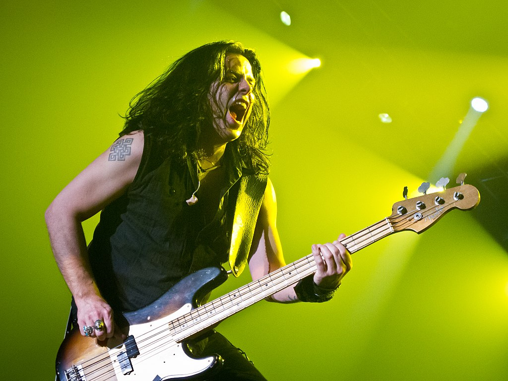
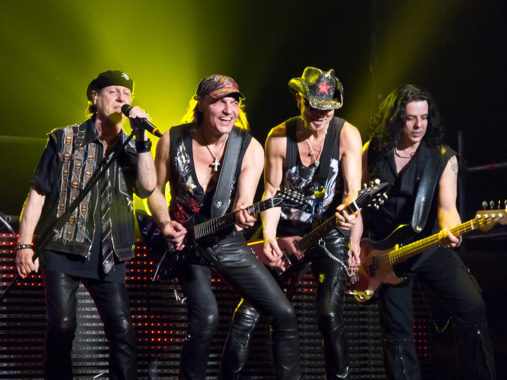
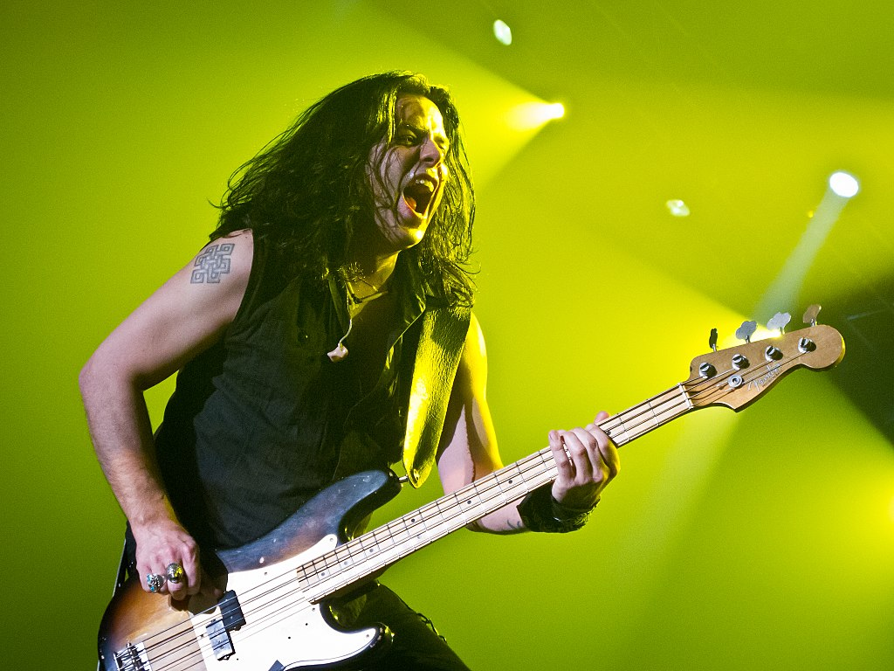
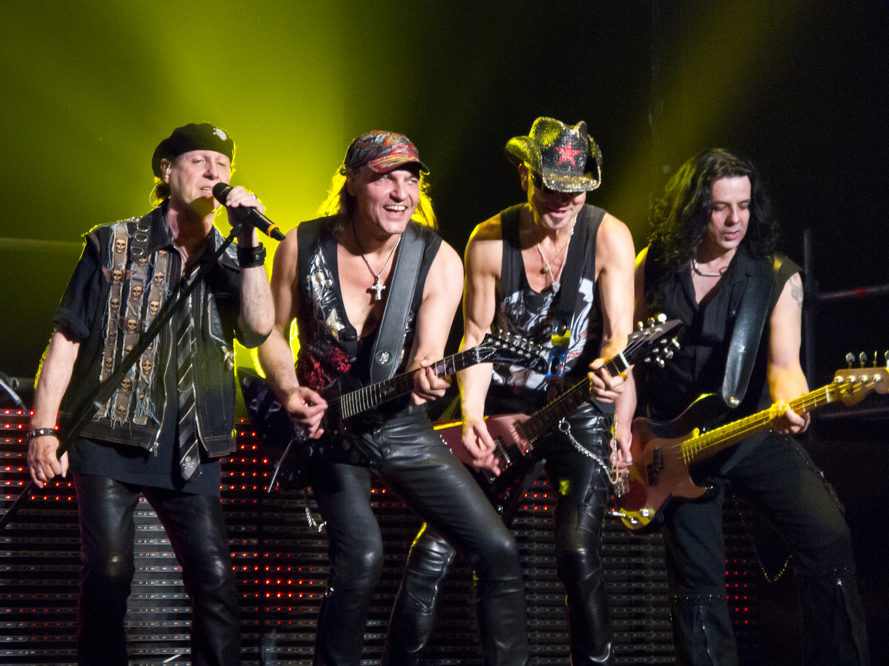

Οι Scorpions είναι ένα ροκ συγκρότημα από το Αννόβερο της Γερμανίας. Σχηματίστηκε το 1965 από τον κιθαρίστα Ρούντολφ Σένκερ, ο οποίος είναι το μόνο σταθερό μέλος της μπάντας. Το συγκρότημα έγινε γνωστό κατά τη δεκαετία του 1980, έπειτα από την μεγάλη μουσική επιτυχία του, κυρίως μέσα από τα τραγούδια Rock you like a Hurricane , No one like you , Send me an angel , Still loving you και Wind of change. Η μπάντα είναι ταξινομημένη στην 40ή θέση, στον κατάλογο του VH1 με τις μεγαλύτερες μπάντες της ροκ μουσικής σκηνής. Επίσης, τo Rock You Like a Hurricane βρίσκεται στη 18η θέση του καταλόγου του VH1, με τα 100 καλύτερα ροκ κομμάτια. Στις 24 Ιανουαρίου 2010, μετά από 46 χρόνια εκτελέσεων, η μπάντα ανακοίνωσε ότι θα αποσυρθεί μετά από μια περιοδεία για την υποστήριξη του νέου τους άλμπουμ Sting in the Tail. Στο τέλος της περιοδείας όμως το συγκρότημα αποφάσισε πως τελικά δεν θα αποσυρθεί αλλά θα συνεχίσει. Η μπάντα έχει πουλήσει πάνω από 180 εκατομμύρια άλμπουμ σε όλο τον κόσμο.
 


